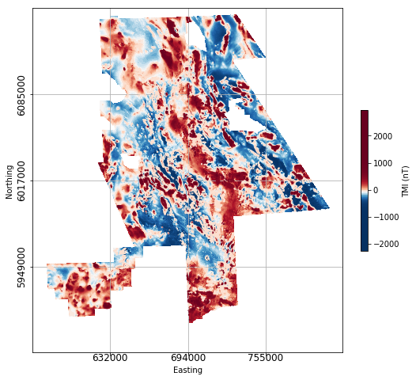

2.2. Case Study Using Geoscience BC Search II Data¶
We’ve now got an idea of how some common ‘geological’ features look in magnetic data, and have been introduced to a variety of tools to help us analyze these features. Now, let’s take a look at some real magnetic data, and apply the same geophysical analysis tools that we applied to the synthetic data from our simple 3D geology scenario.
{kind=link}
For this case study, we use magnetic data from Geoscience BC’s Search Phase II project ([BUM17]). The Search Phase II magnetic gradient and radiometric survey was flown in 2016, covering an area of 24,000 km2 in west-central British Columbia where several producing and past-producing copper and molybdenum mines are located. East-west oriented flight lines were spaced 250 m apart. This was a draped survey with a flight height of 80 m. Below is an image of the residual magnetic field.
In dealing with ‘real’ data, there are some additional data preparation considerations that may need to be addressed before proceeding to data analysis and interpretation. Data cropping (to a specific area of interest) and gridding may need to be done. For this example we use existing gridded data making it easy to jump to visualization and interpretation. We do provide some tools in our user’s data notebook in Section 3 to help users do additional data preparation if required.
The links below will redirect you to sections exploring the Geophysical Toolkit applications as applied to the Geoscience BC Search II magnetic data.
{kind=link}
This section presents the Search Phase II magnetic data, and provides an interactive notebook for applying sun-shading and image enhancements previously introduced in the synthetic modelling section to a subset of the Search II data. Enhanced maps can be exported as located Tiff files.

In this section, a subset of magnetic data from the Search Phase II dataset is processed using the suite of 2D magnetic filters presented in the synthetic model case study. Various color map options are available again here, and image enhancements like sun-shading and contouring can also be applied, before exporting results as located maps.

The edge-detection and depth to source technique previously applied to the magnetic data generated from the our synthetic 3D geologic model, is applied here to a subset of the Search Phase II magnetic data. Located maps and shapefiles can be exported for use in ArcMap, Google Earth or other GIS platforms.